|
Langley Research CenterTurbulence Modeling Resource |
The AFT 3-equation Transitional Model
This web page gives detailed information
on the equations for various forms of the
Amplification Factor Transport (AFT) transition modeling framework.
All forms of the model given on this page are linear eddy viscosity models.
Linear models use the Boussinesq assumption for the constitutive relation:
Unless otherwise stated, for compressible flow with heat transfer this model is implemented as described on the page
Implementing Turbulence Models into the Compressible RANS Equations, with perfect gas
assumed and Pr = 0.72, Prt = 0.90, and Sutherland's law for dynamic viscosity.
Return to: Turbulence Modeling Resource Home Page AFT2017b 3-equation Transition Model Framework with SA
(SA-AFT2017b)
This model framework is sometimes shortened to the initialism "AFT," with the version number
trailing the initialism.
The AFT model is most often coupled with the Spalart-Allmaras model and is formally referred to as
SA-AFT2017b.
The primary reference for the implementation of the AFT 3-equation Transition Modeling Framework is:
The shape factor
is computed as
Note that some implementations limit
and
to prevent runaway behaviors.
AFT2019b 3-equation Transition Model Framework with SA
(SA-AFT2019b)
This variant of the AFT model preserves the same form of the AFT2017b variant and features
improved correlations for the integral boundary layer shape factor
,
the local shape factor
,
and
.
The primary reference for the implementation of AFT2019b is:
Return to: Turbulence Modeling Resource Home Page Jim Coder and Jared Carnes of The University of Tennessee, Knoxville are
acknowledged for helping put together this webpage.
Recent significant updates: Responsible NASA Official:
Ethan Vogel

The default 3-equation model is given by:
(Note: prior to 10/04/2022 the third equation above had the incorrect sign in front of the c2 term. This term should have a minus sign in front
of it, as shown above.)
The source terms of the
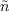 equation are
based on an estimate of the integral boundary layer shape factor,
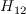.
The production terms are given as
![\frac{\partial \rho \tilde{\gamma}}{\partial t} + \frac{\partial \rho u_j \tilde{\gamma}}{\partial x_j} = c_1 \rho S F_{onset} \Big[1-{{exp}} (\tilde{\gamma})\Big] - c_2 \rho \Omega F_{turb} \Big[c_3 \, {{exp}} (\tilde{\gamma}) - 1 \Big] + \frac{\partial}{\partial x_j} \bigg[\Big(\mu + \frac{\mu_t}{\sigma_y}\Big) \frac{\partial \tilde{\gamma}}{\partial x_j}\bigg]](AFT_transition_eqns/img4.png) <- corrected 10/04/2022
<- corrected 10/04/2022
The functions of the production term are defined as
In the above,
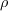
is density,
 is the molecular dynamic viscosity,
is the molecular dynamic viscosity,
 is the eddy viscosity,
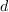
is the wall distance,
is the eddy viscosity,
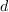
is the wall distance,
 is the strain rate magnitude, and
is the strain rate magnitude, and
 is the vorticity magnitude:
is the vorticity magnitude:

The third equation is that of
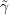,
which is the natural logarithm of the actual intermittency. This change of variable ensures
that the transported
will not be negative and will be physically interpretable across all attainable values,
enabling the compatibility of the AFT model with all types of flow solvers. This equation
is based on the one suggested by Menter et al. (Menter, F.R., Smirnov, P. E., Liu, T.,
and Avancha, R., "A One-Equation Local Correlation-Based Transition Model,"
Flow Turbulence Combustion 95, pp. 583-619 (2015),
https://doi.org/10.1007/s10494-015-9622-4).
The production terms are
Note that the reference paper AIAA 2018-1039 combines
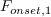
and
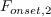
into its
.
These have been separated here for clarity and consistency with other variants of the AFT model.
The destruction term is given as
In the above,
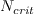
is the critical amplification factor from Mack (Mack, L. M., "Transition and Laminar
Instability," NASA CR-153203, 1977,
https://ntrs.nasa.gov/citations/19770017114) and
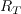
is the turbulence Reynolds number.
where
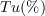
is the freestream turbulence intensity and
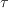
is a limiter suggested by Drela (Drela M. and Youngren H., "User's Guide to
MISES 2.63," February 2008,
https://web.mit.edu/drela/Public/web/mises/mises.pdf).
The AFT model couples with the SA model via a modification to the
ft2 term
The calibration constants for the AFT model are
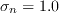,
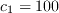,
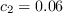,
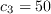,
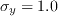, and
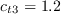
(note that c2 was incorrectly listed as 0.6 prior to 10/04/2022),
where
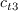
comes from the SA model, and
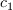,
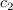,
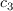, and
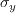
come from Menter et al. (Menter, F.R., Smirnov, P. E., Liu, T., and Avancha, R.,
"A One-Equation Local Correlation-Based Transition Model," Flow Turbulence
Combustion 95, pp. 583-619 (2015),
https://doi.org/10.1007/s10494-015-9622-4).
The boundary conditions for
and
are
It is suggested that the modified eddy viscosity ratio be set to 0.1 (actual eddy viscosity
ratio of
).
To determine the transition location, Spalart's turbulence index should be used
(Spalart, P. R. and Allmaras, S. R., "A One-Equation Turbulence Model for Aerodynamic Flows,"
Recherche Aerospatiale, No. 1, 1994, pp. 5-21 (see
Spalart-Allmaras Turbulence Model page)
which is designed to be 0 in laminar boundary layers where
and 1 in turbulent boundary layers where
by design of the SA model.
(Note this reference has a typo in its
equation, with incorrect sign on the c2 term.
See the
equation in the
SA-AFT2017b model, above, for the correct definition.)
The modifications to the source terms are as follows:
10/04/2022 - fixed typos in gamma equation and in c2 coefficient
Page Curator:
Clark Pederson
Last Updated: 10/04/2022